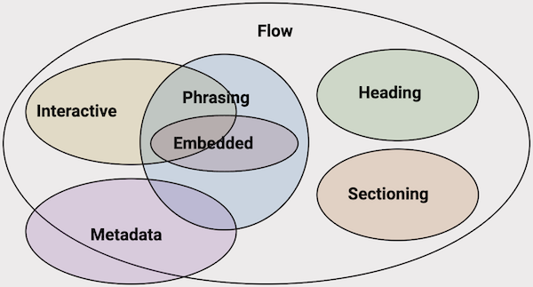

aria-detailsaria-details identifies the element that provides a detailed, extended description for an object, commonly used to link an image to a longer description available elsewhere on the same page, such as inside a <details> disclosure.
aria-detailsThe image below is followed by a <details> disclosure containing an extended description, but there is no programmatic relationship between the two, they are only related by visual proximity and reading order.

Expected result: the disclosure should still be discoverable and usable, since it is real, visible content in normal reading order, but there is no programmatic link telling a screen reader user that this specific disclosure is the image's extended description.
<figure>
<img src="image-complex.png"
alt="Venn diagram depicting content category
relationships. Detailed description below"
>
<figcaption>
<details id="complex-image-details-1">
<summary>Image description</summary>
...
</details>
</figcaption>
</figure>aria-detailsThis is the same pattern, but the image now uses aria-details to explicitly point to the disclosure containing its extended description.
Expected result: worth confirming directly, per spec this should let a screen reader user discover that a detailed description exists for this specific image, and support jumping to or conveying that content, but real support for each part of this behaviour varies significantly, see the note below.
<figure>
<img src="image-complex.png"
alt="Venn diagram depicting content category
relationships. Detailed description below"
aria-details="complex-image-details-2"
>
<figcaption>
<details id="complex-image-details-2">
<summary>Image description</summary>
...
</details>
</figcaption>
</figure>Per the WAI-ARIA 1.3 specification, aria-details supports referring to more than one element, useful when several independent pieces of extended information relate to the same content, rather than a single description. The example below is a paragraph with two unrelated comments attached.
The spec also defines what should happen when a screen reader's underlying accessibility API can't expose more than one relation at once: it SHOULD fall back to exposing only the first referenced element, not merge the two, not drop the attribute entirely, specifically the first one listed.
All customer records will be retained for seven years.
Legal has confirmed that seven years is required.
Expected result: worth confirming directly, and worth treating with more caution than Example 2, single-value aria-details support is already documented as inconsistent above, multiple values is a newer, even less-tested capability layered on top of that. Per spec, both comments should be discoverable, or, on an AT that can't support multiple relations, only the first ("Should this retention period be reviewed?") should be exposed as the documented fallback. Confirm which of these, if either, actually happens with your standard testing set.
<p
id="retention-statement"
aria-details="comment-1 comment-2"
>
All customer records will be retained for seven years.
</p>
<div id="comment-1">
<p>Should this retention period be reviewed?</p>
</div>
<div id="comment-2">
<p>Legal has confirmed that seven years is required.</p>
</div>Published support data for aria-details is mixed and conflicting, and worth re-testing directly rather than relying on either source below:
<img>) splits support into three separate behaviours, each with different results:
aria-details pointing specifically at a <details> element, the same pattern used above, worked effectively across JAWS, NVDA, VoiceOver, and TalkBack, with NVDA needing an add-on for full functionality. This directly contradicts a11ysupport.io's results for VoiceOver and TalkBack.Given the age and conflict between these sources, and that support for this attribute has historically been patchy, this is worth testing fresh against current browser and screen reader versions before drawing conclusions.
Multiple-value support (Example 3) is newer than what either source above tested, and hasn't been independently verified anywhere referenced on this page. Treat it as an open question rather than an extension of the single-value findings above.
Should this retention period be reviewed?